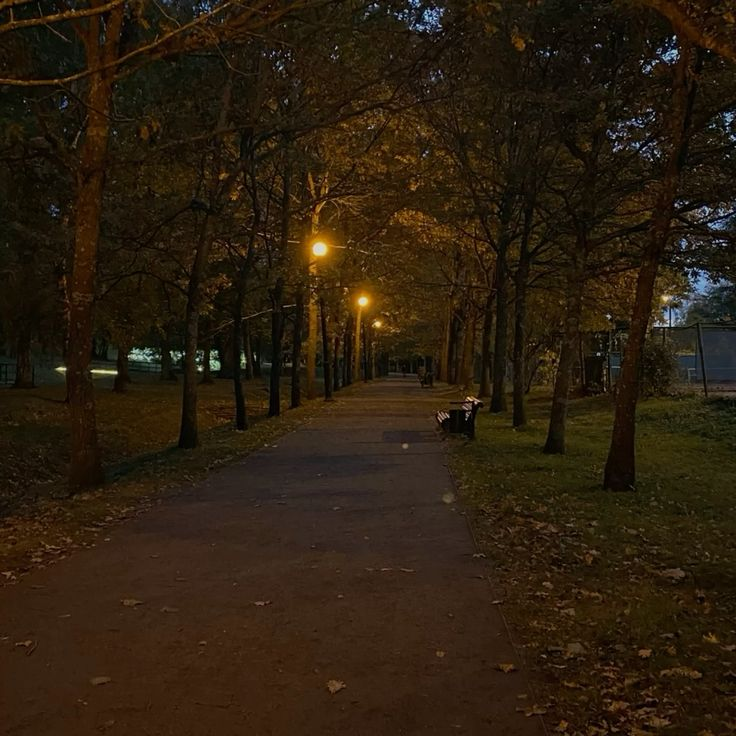

Платформа для самодіагностики та підтримки психологічного здоров'я студентів
Оберіть тест, щоб швидко оцінити свій психологічний стан та отримати корисні рекомендації.
Допоможе оцінити рівень напруги та перевантаження під час навчання.
Покаже, чи є ознаки емоційного виснаження та втрати мотивації.
Допоможе зрозуміти, як сон впливає на настрій і концентрацію.
Швидкий тест для оцінки рівня тривожності та емоційного фону.
Короткі практичні відео та спокійні візуальні матеріали допомагають знизити напругу, покращити концентрацію та знайти внутрішній баланс.
Коротке відео про те, як краще організувати навчання без перевантаження.
Проста вправа для зменшення тривоги та відновлення спокою перед важливою подією.

Після проходження тестів тут відображаються твої останні результати, щоб ти бачив(ла) динаміку та свій поточний стан.
0%
Дані відсутні0%
Дані відсутні0%
Дані відсутніНевеликі щоденні дії допомагають краще справлятися зі стресом, тривожністю та навчальним навантаженням.
Розділяй великі завдання на маленькі кроки та починай з найпростішого.
Спробуй повільний вдих на 4 секунди, затримку на 4 і видих на 4 секунди.
Сконцентруйся на тому, що бачиш, чуєш і відчуваєш навколо себе прямо зараз.
Намагайся лягати спати в один і той самий час і менше користуйся телефоном увечері.